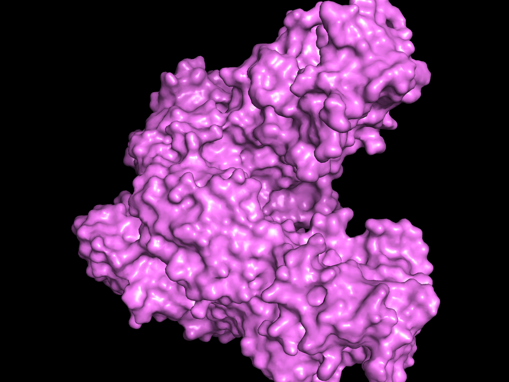
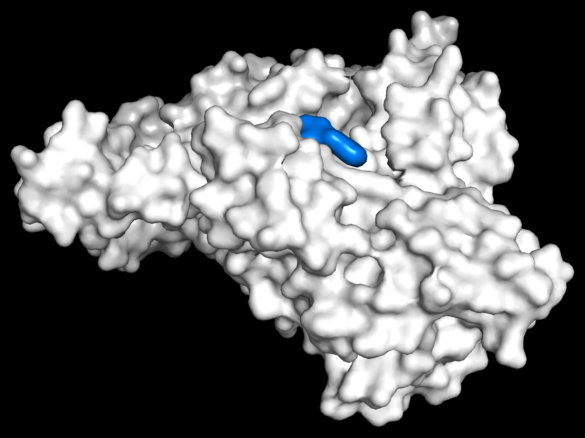
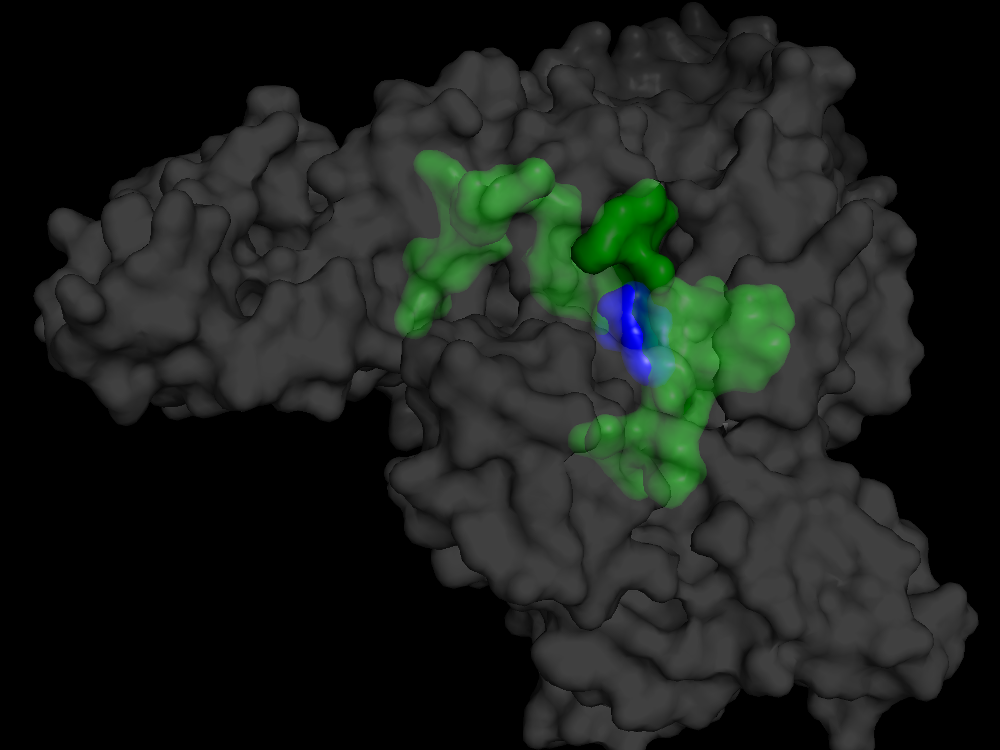

BioMedBound
Hi, I'm Alina Ren, a high school student who aspires to become a doctor. This webpage serves as a place for me to blog about some of my interests and hobbies. The main sections are this landing page, educational toy reviews, science book reviews, and molecular docking. This landing page contains links to the other sections, with the cards linking to my most recent updates.
Molecular Docking
Installing the Software

Step one is getting software installed. I'm using the following software:
fPocket - Used to detect cavities in a molecular structure
PyMOL - Used to visualize the structure of the molecules
AutoDock Vina - This is the software that actually calculates the docking strength.
Open Babel - Used to convert between different file formats
Molecular Docking
Hello Tools Part 1

Step two is making sure the software works at the most basic level. Here we will us PyMol to view Human Serum Albumin and Wafarin before and after docking. We use Open Babel to convert the file format to a format AutoDockVina-GPU can use. Then we use AutoDockVina-GPU to perform the docking calculations.
Molecular Docking
Hello Tools Part 2

Continuing with step 2, demonstrate fPocket, basic work flow, and explination of a few of the stats generated by the tools.